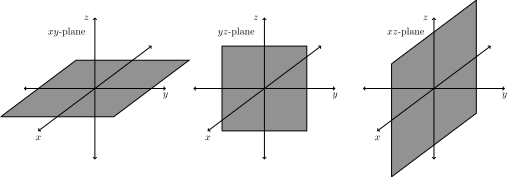

In this activity, we review coordinate systems that you’ve seen before, in preparation
for introducing new coordinate systems in subsequent sections.
Cartesian Plane
The coordinates that you’re probably most comfortable with are standard
two-dimensional coordinates, also called Cartesian coordinate system on the
plane.
In Cartesian coordinates, we describe a point using an -coordinate and a -coordinate.
We write a point as , where the -coordinate describes the horizontal displacement of
the point, and the -coordinate describes the vertical displacement of the
point.
Polar Coordinates
You’ve also seen polar coordinates.
In polar coordinates, we describe a point with an -coordinate and a -coordinate. The
coordinate gives the distance between the point and the origin, and the -coordinate
gives the angle (in radians) between the positive -axis and the segment connecting
the origin and the point.
We can switch between cartesian and polar coordinates using the equations
Write the point in cartesian coordinates. Write the point in polar coordinates.
Recall that we can describe a circle of radius 2 using Cartesian points as the set of
points satisfying
We would like to write describe this circle using polar coordinates.
By definition, the circle of radius centered at the origin consists of the points
which are distance from the origin. Because of this, for any point on the
circle, we have There are points on the circle making every possible angle
with the positive -axis, so we don’t need any restrictions on . If, however,
we only wanted part of the circle, we would accomplish this by restricting
.
Thus, in polar coordinates, the circle of radius centered at the origin can be
described as the set of points such that
There’s an important difference between Cartesian coordinates and polar coordinates:
Cartesian coordinates are unique, while polar coordinates are not. This means that,
given a point in the plane, there’s only one way to describe this point as using
Cartesian coordinates. However, there are many ways to write the point as , using
polar coordinates.
Take, for example, the point , written in Cartesian coordinates.
This point is on the -axis and is distance from the origin. Thus, perhaps the most
obvious way to represent this point in polar coordinates is as (coincidentally, the
same as in Cartesian coordinates). But we could also describe the angle as ,
, , etc. So, we could also write the point in polar coordinates as , and so
on.
Perhaps more surprisingly, we can describe this point as . Imagine making an angle of
with the positive -axis (so we’re on the negative -axis), then going backwards past
the origin. This also gets you to our point. Using equivalent angles, we can also
represent the point as , , and so on.
There are some times in working with polar coordinates when we would like to be
able to represent points uniquely, and in these situations, we often make
restrictions However, even with these restrictions, there still is a point that has
multiple representations! Namely, the origin can be written as for any angle
.
Depending on the situation and context, different people may use different
restrictions or conventions for their ranges for and . For this reason, it’s good to
specify what values you’re allowing, to avoid being misunderstood!
Let’s consider the line described in Cartesian coordinates as the set of points such
that . We’ll figure out how to describe this line in polar coordinates.
Let’s restrict our polar coordinates to and . Perhaps your first guess is to
describe the line as the points such that Which shape does this describe?
A
point. Half of the line. The whole line. A different line. A circle.
Describing the line as is a reasonable first guess, as we can see that many of the
points make an angle with the positive -axis. However, with the restriction that ,
this leaves out half of the line! In order to describe the entire line, we have a couple of
options. One option would be to relax our restriction on , and allow negative values
as well. This would certainly give us the whole line. If, however, we would like to keep
this restriction that , we could also include points with , which will give us the other
half of the line.
Which of the following describe the line in polar coordinates? Select all
that work.
The points such that , where . The points such that ,
where can be any real number. The points such that or , where . The points such that or , where can be any real number. The points
such that or , where . The points such that or , where can be any real
number.
Consider the set of points such that . What does this set of points look
like?
It’s not very clear from what shape this is describing, so let’s try converting this to
Cartesian coordinates, and see if we get something we recognize.
Recall that the relationship between Cartesian and polar coordinates:
From this, we have that , in terms of and , and . Making substitutions using these
facts, we have:
We now have an equation solely in terms of and , but maybe it isn’t quite
recognizable yet. But if we do a bit more algebra...
Now, we can see that this is a circle of radius centered at .
Linear Change of Coordinates
In Linear Algebra, we saw how different coordinate systems arose through
linear change of coordinates. You may remember this referred to as “slanty
space.”
When we write a point in Cartesian coordinates as , we can think of this as a linear
combination of the standard basis vectors:
Of course, we can just as well write a point as a linear combination of vectors from a
different basis, say and . Let’s call this basis For example, we can write the vector
as Taking the coefficients, in -coordinates, we would write this point as Note that
we write in the subscript, in order to remind us that these are -coordinates, rather
than standard Cartesian coordinates.
With linear changes of coordinates, it’s easy to make a mistake and forget which
coordinates you’re using. Make sure to keep careful track!
Three-Dimensional Coordinates
In Linear Algebra, we also worked in three-dimensional Cartesian coordinates, in
.
It’s important to remember that the , , and axes follow the right hand rule.
That is, if you take your right hand, and point your pointer finger in the
direction of the positive -axis, point your middle finger in the direction of
the positive -axis, then your thumb points in the direction of the positive
-axis.
Another way to say this is that if you point the fingers of your right hand in the
direction of the positive -axis and curl them to point in the direction of the positive
-axis, your thumb points in the direction of the positive -axis.
We’ll often refer to the coordinate planes in . These are the three planes we obtain by
setting each of the coordinates to be zero.

More precisely, the -plane is the set of points such that , the -plane is the set of
points such that , and the -plane is the set of points such that .
Similarly to in the plane, we can describe sets of points in using equations.
The set of points such that is the sphere of radius 1 centered at the origin in
.
Conclusion
In this activity, we reviewed coordinate systems that you’ve seen before: standard
two-dimensional coordinates, polar coordinates, coordinates with respect to a given
set of basis vectors, and three-dimensional coordinates.